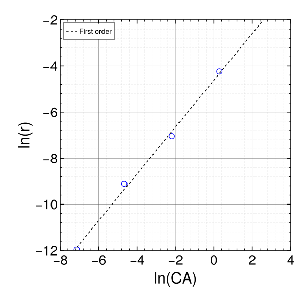
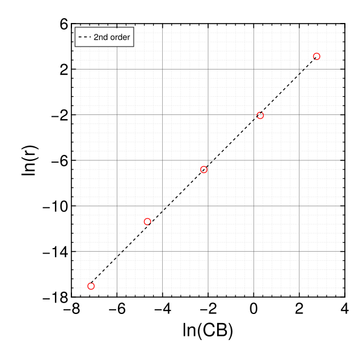
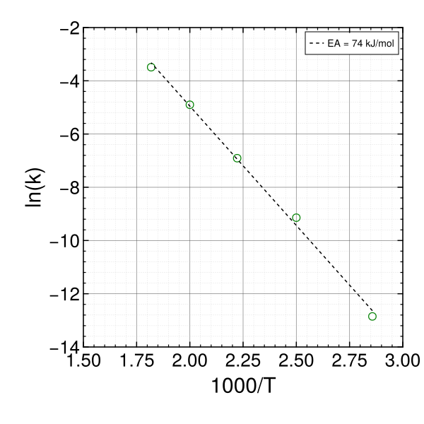
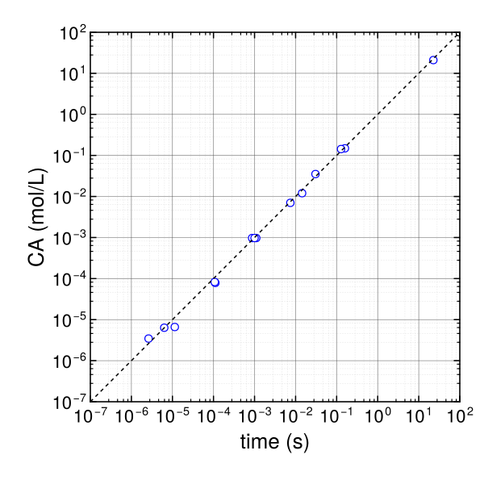

using Printf
using BenchmarkTools
using Statistics
using CairoMakie
using LaTeXStrings
using Polynomials
using Random
using Distributions
using DelimitedFiles
using DataFrames
using JLD2
using Optim
CairoMakie.activate!(type = "svg")
A = 2.75e8
EA = 74000
R = 8.314
r(CA, CB, T) = A*exp(-EA/R/T)*CA*CB^2
r (generic function with 1 method)
Random.seed!(1234)
CA = 10 .^range(-3.1, 1.2, 5)
CB = 10 .^range(-3.1, 1.2, 5)
T = collect(range(350, 550, 5))
d1 = r.(CA, CB[3], T[3])
d2 = r.(CA[3], CB, T[3])
d3 = r.(CA[3], CB[3], T)
d1 = d1.*rand(Normal(1.0, 0.3), length(d1))
d1 = round.(d1, sigdigits = 3)
d2 = d2.*rand(Normal(1.0, 0.3), length(d2))
d2 = round.(d2, sigdigits = 3)
d3 = d3.*rand(Normal(1.0, 0.3), length(d3))
d3 = round.(d3, sigdigits = 3)
CA_out = round.(vcat(CA, CA[3]*ones(length(CA)), CA[3]*ones(length(CA))), sigdigits = 3)
CB_out = round.(vcat(CB[3]*ones(length(CB)), CB, CB[3]*ones(length(CB))), sigdigits = 3)
T_out = vcat(T[3]*ones(length(T)), T[3]*ones(length(T)), T)
d = vcat(d1, d2, d3)
display(round.([CA d1], sigdigits = 3))
display(round.([CB d2], sigdigits = 3))
display(round.([T d3], sigdigits = 3))
5×2 Matrix{Float64}:
0.000794 6.31e-6
0.00944 0.000111
0.112 0.000873
1.33 0.0144
15.8 0.159
5×2 Matrix{Float64}:
0.000794 3.97e-8
0.00944 1.14e-5
0.112 0.0011
1.33 0.128
15.8 22.7
5×2 Matrix{Float64}:
350.0 2.62e-6
400.0 0.000107
450.0 0.001
500.0 0.00745
550.0 0.0305
SSKINETICS_Flow = ["CA (mol/L)" "CB (moles)/L" "T (K)" "Rate (1/s)"]
SSKINETICS_Flow = vcat(SSKINETICS_Flow, [CA_out CB_out T_out d])
io = open("SSKINETICS_Flow.csv", "w")
writedlm(io, SSKINETICS_Flow, ',')
close(io)
SSKINETICS_Flow_df = DataFrame()
SSKINETICS_Flow_df."CA (mol/L)" = CA_out
SSKINETICS_Flow_df."CB (mol/L)" = CB_out
SSKINETICS_Flow_df."T (K)" = T_out
SSKINETICS_Flow_df."rate (1/s)" = d
save_object("SSKINETICS_Flow_df", SSKINETICS_Flow_df)
f1 = Polynomials.fit(log.(CA), log.(d1), 1)
f2 = Polynomials.fit(log.(CB), log.(d2), 1)
f3 = Polynomials.fit(1000 ./T, log.(d3), 1)
display(f1)
display(f2)
display(f3[1]*8.314)
# Plots.scatter(log.(CA), log.(d1))
# Plots.plot!(log.(CA), f1.(log.(CA)))
# Plots.scatter(log.(CB), log.(d2))
# Plots.plot!(log.(CB), f2.(log.(CB)))
# Plots.scatter(1000 ./(T), log.(d3))
# Plots.plot!(1000 ./T, f3.(1000 ./T))
-4.61927322681204 + 1.0154209342754632∙x
-2.4458308717341586 + 2.0060256575973403∙x
-74.53120517385426
[log.(CA) log.(d1)]
5×2 Matrix{Float64}:
-7.13801 -11.9734
-4.66273 -9.10598
-2.18746 -7.04358
0.287823 -4.24053
2.7631 -1.83885
fig1 = Figure(size = (600, 600), backgroundcolor = "white", font = "Arial", figure_padding = 30)
ax1 = Axis(fig1[1,1])
CairoMakie.ylims!(ax1, -12, -2)
CairoMakie.xlims!(ax1, -8, 4)
ax1.xscale = identity
ax1.aspect = 1.0
ax1.xticksvisible = true
ax1.xtickalign = 1
ax1.xminorticks = IntervalsBetween(5)
ax1.xminorticksvisible = true
ax1.xminortickalign = 1
ax1.xminorgridvisible = true
ax1.xgridcolor = "gray50"
ax1.xgridstyle = :solid
ax1.xgridwidth = 0.5
ax1.xminorgridcolor = "gray80"
ax1.xminorgridstyle = :dot
ax1.xminorgridwidth = 0.5
ax1.xticks = -8:2:4
ax1.xlabel = "ln(CA)"
#ax1.xlabelfont = "Arial"
ax1.xlabelsize = 30
#ax1.xticklabelfont = "Arial"
ax1.xticklabelsize = 26
ax1.xticksize = 8.0
ax1.xtickwidth = 1.5
ax1.xminorticksize = 4.0
ax1.xminortickwidth = 1.2
ax1.yscale = identity
ax1.yticks = -12:2:-2
ax1.ytickalign = 1
ax1.yticksvisible = true
ax1.yminorticksvisible = true
ax1.yminortickalign = 1
ax1.yminorticks = IntervalsBetween(5)
ax1.yminorgridvisible = true
ax1.yminorgridstyle = :dot
ax1.yminorgridwidth = 0.5
ax1.ygridcolor = "gray50"
ax1.ygridstyle = :solid
ax1.ygridwidth = 0.5
ax1.yminorgridcolor = "gray80"
ax1.ylabel = "ln(r)"
ax1.ylabelsize = 30
ax1.yticklabelsize = 26
ax1.yticksize = 8.0
ax1.ytickwidth = 1.5
ax1.yminorticksize = 4.0
ax1.yminortickwidth = 1.2
ax1.spinewidth = 1.00
ax2 = Axis(fig1[1,1], aspect = 1.0, yaxisposition = :right, xaxisposition = :top, xticksvisible = true, xtickalign = 1, xminorticks = IntervalsBetween(5), xminorticksvisible = true, xminortickalign = 1)
CairoMakie.ylims!(ax2, -12, -2)
CairoMakie.xlims!(ax2, -8, 4)
ax2.xscale = identity
ax2.yscale = identity
ax2.xticks = -8:2:4
ax2.xticklabelsvisible = false
ax2.yticklabelsvisible = false
ax2.xticksize = 8.0
ax2.xtickwidth = 1.5
ax2.xminorticksize = 4.0
ax2.xminortickwidth = 1.2
ax2.ytickalign = 1
ax2.yticksvisible = true
ax2.yminorticksvisible = true
ax2.yminortickalign = 1
ax2.yticks = -12:2:-2
ax2.yminorticks = IntervalsBetween(5)
ax2.yticksize = 8.0
ax2.ytickwidth = 1.5
ax2.yminorticksize = 4.0
ax2.yminortickwidth = 1.2
pl1 = CairoMakie.scatter!(log.(CA), log.(d1), marker = :circle, markersize = 15, strokewidth = 1.25, strokecolor = :blue, color = (:white, 0.0))
pl1 = CairoMakie.lines!(log.(CA), f1.(log.(CA)), label = "First order", color = :black, linestyle = :dash, linewidth = 1.5)
axislegend(position = :lt, framevisible = true)
fig1
#save("Steady1.svg", fig1)

[log.(CB) log.(d2)]
5×2 Matrix{Float64}:
-7.13801 -17.0419
-4.66273 -11.3819
-2.18746 -6.81245
0.287823 -2.05573
2.7631 3.12236
fig1 = Figure(size = (600, 600), backgroundcolor = "white", font = "Arial", figure_padding = 30)
ax1 = Axis(fig1[1,1])
CairoMakie.ylims!(ax1, -18, 6)
CairoMakie.xlims!(ax1, -8, 4)
ax1.xscale = identity
ax1.aspect = 1.0
ax1.xticksvisible = true
ax1.xtickalign = 1
ax1.xminorticks = IntervalsBetween(5)
ax1.xminorticksvisible = true
ax1.xminortickalign = 1
ax1.xminorgridvisible = true
ax1.xgridcolor = "gray50"
ax1.xgridstyle = :solid
ax1.xgridwidth = 0.5
ax1.xminorgridcolor = "gray80"
ax1.xminorgridstyle = :dot
ax1.xminorgridwidth = 0.5
ax1.xticks = -8:2:4
ax1.xlabel = "ln(CB)"
#ax1.xlabelfont = "Arial"
ax1.xlabelsize = 30
#ax1.xticklabelfont = "Arial"
ax1.xticklabelsize = 26
ax1.xticksize = 8.0
ax1.xtickwidth = 1.5
ax1.xminorticksize = 4.0
ax1.xminortickwidth = 1.2
ax1.yscale = identity
ax1.yticks = -18:4:6
ax1.ytickalign = 1
ax1.yticksvisible = true
ax1.yminorticksvisible = true
ax1.yminortickalign = 1
ax1.yminorticks = IntervalsBetween(5)
ax1.yminorgridvisible = true
ax1.yminorgridstyle = :dot
ax1.yminorgridwidth = 0.5
ax1.ygridcolor = "gray50"
ax1.ygridstyle = :solid
ax1.ygridwidth = 0.5
ax1.yminorgridcolor = "gray80"
ax1.ylabel = "ln(r)"
ax1.ylabelsize = 30
ax1.yticklabelsize = 26
ax1.yticksize = 8.0
ax1.ytickwidth = 1.5
ax1.yminorticksize = 4.0
ax1.yminortickwidth = 1.2
ax1.spinewidth = 1.00
ax2 = Axis(fig1[1,1], aspect = 1.0, yaxisposition = :right, xaxisposition = :top, xticksvisible = true, xtickalign = 1, xminorticks = IntervalsBetween(5), xminorticksvisible = true, xminortickalign = 1)
CairoMakie.ylims!(ax2, -18, 6)
CairoMakie.xlims!(ax2, -8, 4)
ax2.xscale = identity
ax2.yscale = identity
ax2.xticks = -8:2:4
ax2.xticklabelsvisible = false
ax2.yticklabelsvisible = false
ax2.xticksize = 8.0
ax2.xtickwidth = 1.5
ax2.xminorticksize = 4.0
ax2.xminortickwidth = 1.2
ax2.ytickalign = 1
ax2.yticksvisible = true
ax2.yminorticksvisible = true
ax2.yminortickalign = 1
ax2.yticks = -18:4:6
ax2.yminorticks = IntervalsBetween(5)
ax2.yticksize = 8.0
ax2.ytickwidth = 1.5
ax2.yminorticksize = 4.0
ax2.yminortickwidth = 1.2
pl1 = CairoMakie.scatter!(log.(CB), log.(d2), marker = :circle, markersize = 15, strokewidth = 1.25, strokecolor = :red, color = (:white, 0.0))
pl1 = CairoMakie.lines!(log.(CB), f2.(log.(CB)), label = "2nd order", color = :black, linestyle = :dash, linewidth = 1.5)
axislegend(position = :lt, framevisible = true)
fig1
#save("Steady2.svg", fig1)

[1000 ./T log.(d3)]
5×2 Matrix{Float64}:
2.85714 -12.8523
2.5 -9.14268
2.22222 -6.90776
2.0 -4.89954
1.81818 -3.49003
fig1 = Figure(size = (600, 600), backgroundcolor = "white", font = "Arial", figure_padding = 30)
ax1 = Axis(fig1[1,1])
CairoMakie.ylims!(ax1, -14, -2)
CairoMakie.xlims!(ax1, 1.5, 3)
ax1.xscale = identity
ax1.aspect = 1.0
ax1.xticksvisible = true
ax1.xtickalign = 1
ax1.xminorticks = IntervalsBetween(5)
ax1.xminorticksvisible = true
ax1.xminortickalign = 1
ax1.xminorgridvisible = true
ax1.xgridcolor = "gray50"
ax1.xgridstyle = :solid
ax1.xgridwidth = 0.5
ax1.xminorgridcolor = "gray80"
ax1.xminorgridstyle = :dot
ax1.xminorgridwidth = 0.5
ax1.xticks = 1.5:0.25:3
ax1.xlabel = "1000/T"
#ax1.xlabelfont = "Arial"
ax1.xlabelsize = 30
#ax1.xticklabelfont = "Arial"
ax1.xticklabelsize = 26
ax1.xticksize = 8.0
ax1.xtickwidth = 1.5
ax1.xminorticksize = 4.0
ax1.xminortickwidth = 1.2
ax1.yscale = identity
ax1.yticks = -14:2:2
ax1.ytickalign = 1
ax1.yticksvisible = true
ax1.yminorticksvisible = true
ax1.yminortickalign = 1
ax1.yminorticks = IntervalsBetween(5)
ax1.yminorgridvisible = true
ax1.yminorgridstyle = :dot
ax1.yminorgridwidth = 0.5
ax1.ygridcolor = "gray50"
ax1.ygridstyle = :solid
ax1.ygridwidth = 0.5
ax1.yminorgridcolor = "gray80"
ax1.ylabel = "ln(k)"
ax1.ylabelsize = 30
ax1.yticklabelsize = 26
ax1.yticksize = 8.0
ax1.ytickwidth = 1.5
ax1.yminorticksize = 4.0
ax1.yminortickwidth = 1.2
ax1.spinewidth = 1.00
ax2 = Axis(fig1[1,1], aspect = 1.0, yaxisposition = :right, xaxisposition = :top, xticksvisible = true, xtickalign = 1, xminorticks = IntervalsBetween(5), xminorticksvisible = true, xminortickalign = 1)
CairoMakie.ylims!(ax2, -14, -2)
CairoMakie.xlims!(ax2, 1.5, 3)
ax2.xscale = identity
ax2.yscale = identity
ax2.xticks = 1.5:0.25:3
ax2.xticklabelsvisible = false
ax2.yticklabelsvisible = false
ax2.xticksize = 8.0
ax2.xtickwidth = 1.5
ax2.xminorticksize = 4.0
ax2.xminortickwidth = 1.2
ax2.ytickalign = 1
ax2.yticksvisible = true
ax2.yminorticksvisible = true
ax2.yminortickalign = 1
ax2.yticks = -14:2:2
ax2.yminorticks = IntervalsBetween(5)
ax2.yticksize = 8.0
ax2.ytickwidth = 1.5
ax2.yminorticksize = 4.0
ax2.yminortickwidth = 1.2
pl1 = CairoMakie.scatter!(1000 ./(T), log.(d3), marker = :circle, markersize = 15, strokewidth = 1.25, strokecolor = :green, color = (:white, 0.0))
pl1 = CairoMakie.lines!(1000 ./(T), f3.(1000 ./T), label = "EA = 74 kJ/mol", color = :black, linestyle = :dash, linewidth = 1.5)
axislegend(position = :rt, framevisible = true)
fig1
#save("Steady3.svg", fig1)

function temp(par)
A = 2.75e8
EA = par[1]
a = par[2]
b = par[3]
rm(CA, CB, T) = A*exp(-EA/R/T)*CA^a*CB^b
m1 = rm.(CA, CB[3], T[3])
m2 = rm.(CA[3], CB, T[3])
m3 = rm.(CA[3], CB[3], T)
m = vcat(m1, m2, m3)
e1 = (d1 - m1)./d1
e2 = (d2 - m2)./d2
e3 = (d3 - m3)./d3
e = vcat(e1, e2, e3)
SSE = sum(e.^2)
return SSE, e, m
end
obj(par) = temp(par)[1]
obj (generic function with 1 method)
sol = Optim.optimize(obj, [74000., 1.5, 2.3])
display(sol.minimizer)
SSE, e, m = temp(sol.minimizer)
#Plots.scatter(e)
#Plots.scatter(log10.(d), log10.(m))
#Plots.plot!([-7, 2], [-7, 2], legend = nothing)
3-element Vector{Float64}:
73835.61586498845
1.0162213414537682
2.0162042127569983
(0.5390266438544914, [-0.006232835557806683, 0.2923104092488642, -0.11324174873072168, 0.1650140294357368, 0.0644166413160049, -0.13233300017254268, 0.42019848140270327, 0.1164908666891637, -0.11638318787500035, 0.07441367659289508, -0.3196744603448831, 0.22935500042879398, 0.02813995335808003, 0.06127167000415276, -0.15253422980801387], [6.34932919236976e-6, 7.855354457337608e-5, 0.00097186004664192, 0.01202379797612539, 0.14875775403075522, 4.495362010684994e-8, 6.609737312009182e-6, 0.00097186004664192, 0.14289704804800005, 21.01080954134128, 3.4575470861035937e-6, 8.245901495411904e-5, 0.00097186004664192, 0.006993526058469062, 0.03515229400914442])
fig1 = Figure(size = (600, 600), backgroundcolor = "white", font = "Arial", figure_padding = 30)
ax1 = Axis(fig1[1,1])
CairoMakie.ylims!(ax1, 1e-7, 100)
CairoMakie.xlims!(ax1, 1e-7, 100)
ax1.xscale = log10
ax1.aspect = 1.0
ax1.xticksvisible = true
ax1.xtickalign = 1
ax1.xminorticks = IntervalsBetween(5)
ax1.xminorticksvisible = true
ax1.xminortickalign = 1
ax1.xminorgridvisible = true
ax1.xgridcolor = "gray50"
ax1.xgridstyle = :solid
ax1.xgridwidth = 0.5
ax1.xminorgridcolor = "gray80"
ax1.xminorgridstyle = :dot
ax1.xminorgridwidth = 0.5
#ax1.xticks = 0:20:100
ax1.xlabel = "time (s)"
#ax1.xlabelfont = "Arial"
ax1.xlabelsize = 26
#ax1.xticklabelfont = "Arial"
ax1.xticklabelsize = 22
ax1.xticksize = 8.0
ax1.xtickwidth = 1.5
ax1.xminorticksize = 4.0
ax1.xminortickwidth = 1.2
ax1.yscale = log10
#ax1.yticks = 0:2:10
ax1.ytickalign = 1
ax1.yticksvisible = true
ax1.yminorticksvisible = true
ax1.yminortickalign = 1
ax1.yminorticks = IntervalsBetween(5)
ax1.yminorgridvisible = true
ax1.yminorgridstyle = :dot
ax1.yminorgridwidth = 0.5
ax1.ygridcolor = "gray50"
ax1.ygridstyle = :solid
ax1.ygridwidth = 0.5
ax1.yminorgridcolor = "gray80"
ax1.ylabel = "CA (mol/L)"
ax1.ylabelsize = 26
ax1.yticklabelsize = 22
ax1.yticksize = 8.0
ax1.ytickwidth = 1.5
ax1.yminorticksize = 4.0
ax1.yminortickwidth = 1.2
ax1.spinewidth = 1.00
ax2 = Axis(fig1[1,1], aspect = 1.0, yaxisposition = :right, xaxisposition = :top, xticksvisible = true, xtickalign = 1, xminorticks = IntervalsBetween(5), xminorticksvisible = true, xminortickalign = 1)
CairoMakie.ylims!(ax2, 1e-7, 100)
CairoMakie.xlims!(ax2, 1e-7, 100)
ax2.xscale = log10
ax2.yscale = log10
#ax2.xticks = 0:20:100
ax2.xticklabelsvisible = false
ax2.yticklabelsvisible = false
ax2.xticksize = 8.0
ax2.xtickwidth = 1.5
ax2.xminorticksize = 4.0
ax2.xminortickwidth = 1.2
ax2.ytickalign = 1
ax2.yticksvisible = true
ax2.yminorticksvisible = true
ax2.yminortickalign = 1
#ax2.yticks = 0:2:10
ax2.yminorticks = IntervalsBetween(5)
ax2.yticksize = 8.0
ax2.ytickwidth = 1.5
ax2.yminorticksize = 4.0
ax2.yminortickwidth = 1.2
pl1 = CairoMakie.scatter!(d, m, marker = :circle, markersize = 13, strokewidth = 1.25, strokecolor = :blue, color = :white)
pl1 = CairoMakie.lines!([1e-7, 100], [1e-7, 100], color = :black, linestyle = :dash, linewidth = 1.5)
fig1
